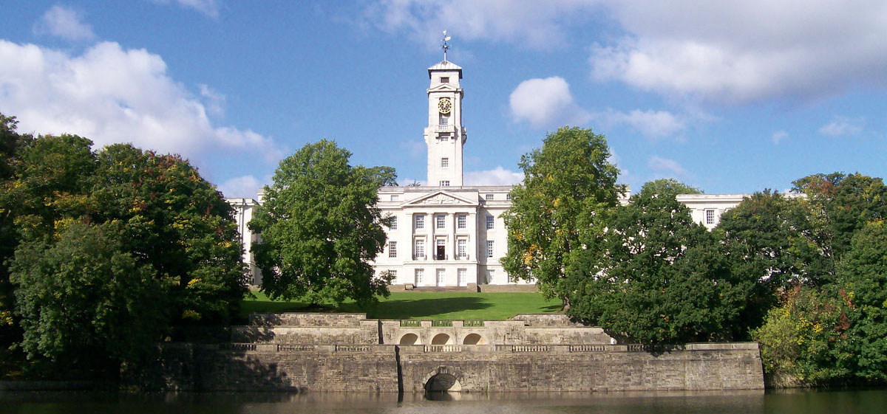
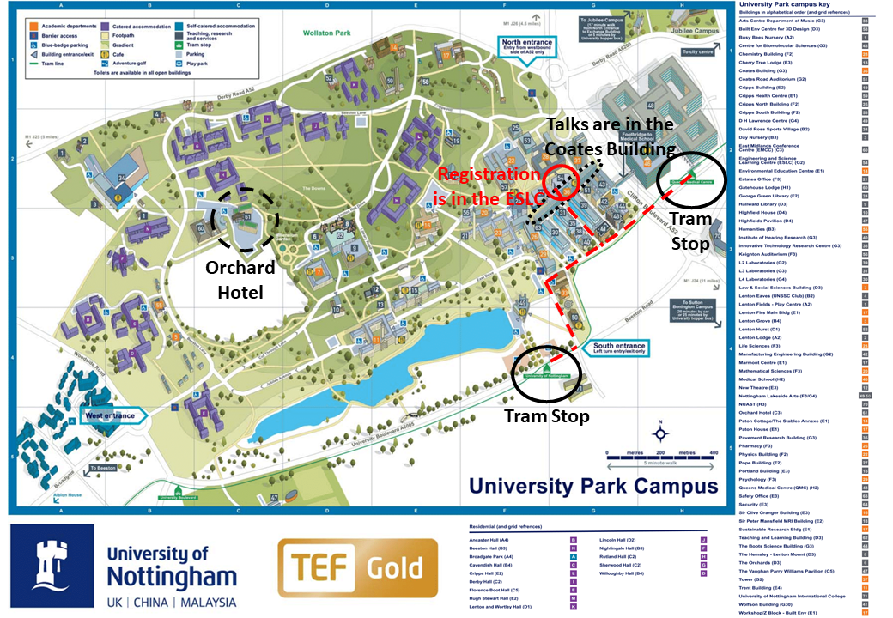

Registration
FAQs
Registration
FAQs
The Postgraduate Women in Physics Conference will be held on the University of Nottingham's University Park Campus. Registration and breaks will be in room B14 in the Engineering and Science Learning Centre (ESLC), while the talks will be in lecture theatre C25 in the Coates Building
University Park is easily accessible from the centre of Nottingham by tram. Take the tram towards Toton Lane and alight at either The University of Nottingham or QMC stop. Tickets can be brought on the station plaform or via the NETGO! app, and the map below shows the route from either tram stop to the ESLC. There will be signs and helpers directing you from the registration room to the main lecture theatre.
We are aiming to have a fully accessible venue for this event. The room has step free access and all speakers, chairs, and question-askers will be required to use a microphone. If you have any specific accessibility requirements, please indicate these on your registration form, or contact us via pgwipnotts@gmail.com, and we will make sure these are accommodated.
We will be providing tea, coffee, and lunch on the day. If you have any dietary requirements, please indicate these on your registration form.
If you want to stay overnight before or after the conference there are a number of hotels in the city centre, or there is The Orchard Hotel on campus.
@pgwipnotts
pgwipnotts@gmail.com